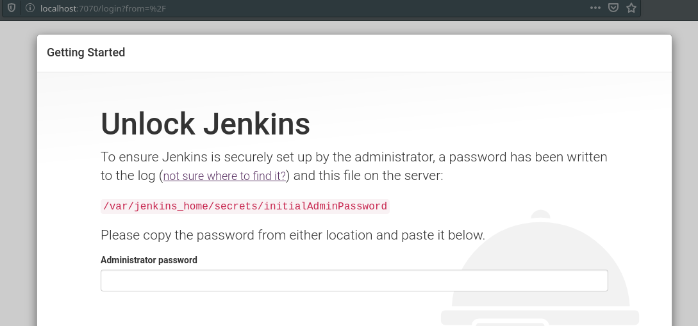
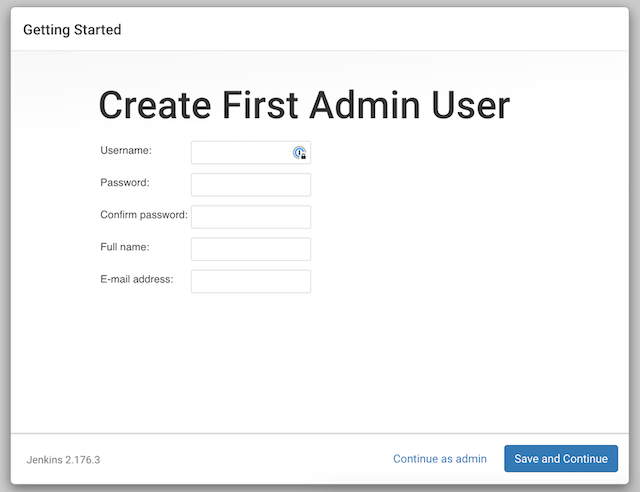
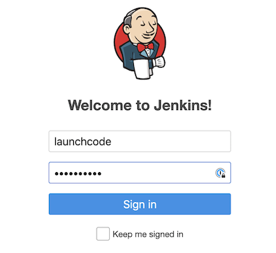

Running A Jenkins Container
Docker makes creating new containers really easy, we simply need to provide a name for our container bind the correct ports, and include the image we want to run in our container.
We have created a Jenkins container Image that includes the AWS CLI pre-installed. Like the other custom images used in this class it can be found under the launchcodedevops Docker Hub organization.
$ docker run -d --name jenkins -p 7070:8080 -v jenkins_home:/var/jenkins_home launchcodedevops/jenkins-awscli
Although you have seen many docker run commands so far this one has a few options that may confuse you. The first difference is that we have published the host machine port 7070 to the container port 8080 – the default port Jenkins listens on. For consistency we usually publish the same host and container port. But in this case we use a different host port to avoid conflict with port 8080 that our Spring applications run on by default.
Tip
The general form for publishing a port is -p <host port>:<container port>. This lets you define the host machine port independent of the container process port. Often container processes listen on common ports like 8080. By varying the host port you can avoid port conflicts on the host machine or when running many containers that listen on the same port.
The second difference is the use of the -v or volume option. This option instructs Docker to create a persistent volume named jenkins_home and mount it to the container’s directory /var/jenkins_home.
Recall that a core tenant of using Docker containers is to treat them as disposable or ephemeral. This is what gives Docker containers their unprecedented portability and scalability. In the next step we will configure our Jenkins container to prepare it for setting up a pipeline. During this step all of the settings are saved to the container’s /var/jenkins_home directory.
If we dispose of the container we would also be disposing of all the settings it wrote internally to the configuration directory. It would be frustrating to have to re-configure Jenkins from scratch every time we recreate the container! And what if we wanted to run our container on a different machine, like a remote EC2 instance?
Wouldn’t it be better if we could save those configuration files for reuse and portability while still having the freedom to create and destroy the container as needed?
Note
By default all data written in a container exists in its internal file system layer. This data only exists for the lifetime of the container on the host machine that created it.
Container Volumes
While a container itself should be disposable that doesn’t mean that all of the data inside of it needs to be discarded with it. For cases where the data a container uses needs to be persisted beyond its lifetime we can mount external volumes into a directory in the container.
Tip
Think of a volume like an external drive that can be attached and unattached from containers.
From the container’s perspective it is writing to a directory in its file system. But because that directory is mounted from an external volume it will be persisted even after the container is destroyed.
In the same way we can mount an existing volume to any new containers we create. Once again the container sees just another directory in its file system. But its contents will have been provided from the external volume. In our case we can persist our Jenkins settings in a volume then mount it into any new Jenkins containers we create so we don’t have to re-configure them every time!
Note
There are many different types of mounts that can be used in a container. In this context we chose to use a named volume mount that the Docker Engine will manage for us. You can read more about the different storage options and their use cases in the storage documentation section.
Check That Everything Worked
After issuing the run command you can run a few more commands to investigate what was created:
# check that the container named 'jenkins' is up and running
$ docker ps
# see the 'jenkins_home' named volume created by the run command
$ docker volume ls
# inspect the container configuration (warning there is a LOT in here!)
$ docker inspect jenkins
# you can use grep to skip to the Mounts section of the configuration
# the -A 11 option means print 11 lines after the matched term (Mounts)
$ docker inspect jenkins | grep Mounts -A 11
# gives the following output
# you can see that the named volume 'jenkins_home' has been mounted to '/var/jenkins_home'
"Mounts": [
{
"Type": "volume",
"Name": "jenkins_home",
# this is the directory where the volume exists on the Linux host (VM in Docker for Mac)
"Source": "/var/lib/docker/volumes/jenkins_home/_data",
# this is the directory where the volume is mounted in the container
"Destination": "/var/jenkins_home",
"Driver": "local",
"Mode": "z",
"RW": true,
"Propagation": ""
}
],
After checking that everything was set up correctly you can navigate to http://localhost:7070 in your browser to begin configuring Jenkins.
Jenkins First Time Setup
The first time you start an empty Jenkins server you will need to unlock it with an admin password.

This password can be found at /var/jenkins_home/secrets/initialAdminPassword within the container. There are many ways we can access this value but the simplest is to have the container do the work for us! We can have the container print out the contents using the exec command.
Note
general form: docker exec <container name / ID> [...command]. The exec command instructs a container to execute the command string provided after the container name. The stdout of the command will be displayed on the host machine. You can read more about the exec command and its many uses here.
Enter the following command to instruct the container to cat the contents of password file:
$ docker exec jenkins cat /var/jenkins_home/secrets/initialAdminPassword
Copy and enter the password into the Unlock Jenkins page at http://localhost:7070 then click Continue. On the next page select Install suggested plugins and give it a few minutes to install everything Jenkins needs.
Warning
Do not continue to the following section until all of the plugins have finished installing. Now is a good time to take a break for some coffee or fresh air.
After the plugins have been installed you will be prompted with the Create Admin User form.

In order to make debugging easier we will all use the same credentials:
- username:
launchcode
- password:
launchcode
You will then be asked about the Jenkins URL. For now we will leave this with the default value of http://localhost:7070/. Select Save and Continue.
Tip
In the future if you deploy Jenkins to the cloud don’t forget to update this setting to reference the Public DNS Name of your instance running the Jenkins container. This can be found in the sidebar under Manage Jenkins > Configure System > Jenkins Location > Jenkins URL.
Seting Up the AWS CLI in the Jenkins Container
In some cases you need to load environment variables for Jenkins to use in its pipeline stages. For example, you will likely need to load your AWS credentials in order to deliver and deploy to AWS resources. Recall that you can use the -e VAR=value option when running a container to provide environment variables to it. However, all values passed this way will be exposed in your shell history.
Using Env Files
For scenarios where you want to protect sensitive values you can use another option, --env-file /path/to/env-file. This option lets you load environment variables from a file rather than listing them individually in the run command. The shell history will only show a path to a file rather than exposing the values themselves.
Tip
Using the --env-file option can also be useful when you have many environment variables to pass to a container that become unmanageable to list individually.
If you want to run the Jenkins container and provide AWS credentials you should use an env file. This way the AWS environment variables can be loaded without exposing the sensitive credentials in your shell history.
Note
The env file itself can be named anything you’d like. The common convention is to use the .list file extension.
While an environment file’s name and extension are arbitary the format used to define the variables is not. Environment variables must use the common VARIABLE_NAME=value [shell] format.
# comments are preceeded with the hashtag character
# each env var is declared on its own line
MY_ENV_VAR=somevalue
NEXT_VAR=othervalue
Warning
There can be no spaces between the VARIABLE_NAME the = sign or the value!
Setting Up the AWS Env File
Your AWS CLI credentials can be found on your AWS Account page (if permitted by your organization owner). If you have already set up the AWS CLI locally you can view the credentials and configuration settings in the default ~/.aws/credentials and ~/.aws/config files.
After you have located your credentials create an env file. You should create this file in the ~/.aws directory to keep it in a well-known location so it is not misplaced. First create the file then paste in the template below with your values.
# create and open the file for editing
# in VSCode
$ code ~/.aws/jenkins.list
# in VIM
$ vim ~/.aws/jenkins.list
# paste this into ~/.aws/jenkins.list with the values of your variables
AWS_DEFAULT_REGION=
AWS_ACCESS_KEY_ID=
AWS_SECRET_ACCESS_KEY=
# confirm it was created and saved properly
# make sure there are no spaces after the '='!
$ cat ~/.aws/jenkins.list
Note
We could simplify this by copying the entire ~/.aws directory into the container. But this is risky as it would copy over ALL of the AWS profiles which may include credentials that have nothing to do with this course. In practice the safest way to go about this is to create an IAM service role (for use within AWS) or JenkinsUser account (for use outside AWS) that have restricted policies for resource access. But this section is already pretty complex and your student AWS accounts are restricted in our AWS organization so we will take a shortcut in the name of brevity.
Because environment variables cannot be set in a running container they must be provided during container creation. This means we will need to stop and remove our Jenkins container. Normally doing so would mean we lose all of the configuration data. But because we used a volume this is of no concern to us! We will stop and remove the container then re-create it with the volume and environment file:
# stop and remove the container
$ docker stop jenkins && docker rm jenkins
# you can see the volume exists even after the container is removed
$ docker volume ls | grep jenkins_home
# create the container again, this time adding the env-file option
$ docker run -d --name jenkins -p 7070:8080 --env-file ~/.aws/jenkins.list -v jenkins_home:/var/jenkins_home launchcodedevops/jenkins-awscli
Check That Everything Worked
You can confirm that the volume mounting worked by navigating back to http://localhost:7070 and seeing the first-time setup page is not presented. Instead you should see the user login page. You can log in using the launchcode / launchcode username and password we set earlier.

Next let’s confirm that the AWS credentials were loaded by the env file. We can check by having the container print out its environment using exec:
$ docker exec jenkins env | grep AWS
# expected output
AWS_DEFAULT_REGION=us-east-1
AWS_ACCESS_KEY_ID=XXX
AWS_SECRET_ACCESS_KEY=YYY
Testing the AWS CLI
Now let’s do a final test by running the AWS CLI from within the container. We will use exec again with some additional options.
This time we will pass the -it options to enter -i interactive mode and -t to attach the container to our terminal. By issuing the bash command we are instructing the container to execute the bash shell. Combined with the -it options this means our terminal will be binded to the bash session executed in the container.
Note
Attaching to the shell session of a container is the functional equivalent of SSH-ing into a remote machine. Depending on which shell the container has installed you will adjust the shell command issued in exec. In lean containers, that have minimal installed programs, bash may not be insalled. You can usually use at least the original sh shell (before it was the B orn A gain SH ell)!
Tip
When you are done working inside the container you can use exit to get back to the host machine shell.
Before we enter the container we will list our S3 buckets on the host machine. That way once we are in the container we can issue the same command and confirm that the AWS CLI has been configured properly.
# issued from the host machine for comparison
$ aws s3 ls
Once we are in the container we will command AWS to list the S3 buckets for the credentialed account. We expect to see the same output we saw on our host machine.
# attach the container's bash shell to your terminal
$ docker exec -it jenkins bash
# the terminal will now be attached to the container's shell session as root
# now check the AWS CLI is working within the container
$ aws s3 ls
# expect the same list of buckets as were listed on our host machine
# exit the container shell to return to your host shell
$ exit
Note
For the clever toads out there, yes, you could have used docker exec jenkins aws s3 ls and gotten the same result. But then you wouldn’t have learned how to enter a container! Like using SSH, entering a container is a rare occurence. But it is useful to know for the times when debugging means getting inside for a look around.
Everything is ready to go! You can return to the Walkthrough: CI/CD With Jenkins page now.